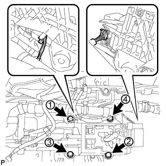
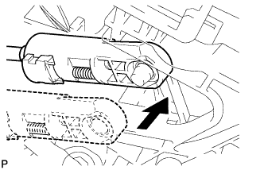

РЫЧАГ ПЕРЕКЛЮЧЕНИЯ ПЕРЕДАЧ > УСТАНОВКА |
| 1. УСТАНОВИТЕ РЫЧАГ ПЕРЕКЛЮЧЕНИЯ ПЕРЕДАЧ В СБОРЕ |
|  |
Закрепите напольный механизм переключения передач 4 болтами, затянув их в порядке, показанном на рисунке.
Подсоедините 2 разъема.
| 2. ПОДСОЕДИНИТЕ ТРОС МЕХАНИЗМА ПЕРЕКЛЮЧЕНИЯ ПЕРЕДАЧ В СБОРЕ |
Поверните разъем троса механизма переключения передач на 180° против часовой стрелки. Удерживая разъем на месте, нажмите на фиксатор до двойного щелчка.
| *1 | Гнездо | *2 | Фиксатор |
| *a | Вставьте | - | - |
Подсоедините наружную часть троса механизма переключения передач к держателю рычага переключения передач. Убедитесь, что разъем и фиксатор установлены в первоначальные положения.
| *1 | Держатель рычага переключения передач | - | - |
 |
Сдвиньте ползун в направлении, показанном на рисунке, и вытяните фиксатор.
| *1 | Ползун |
| *2 | Фиксатор |
|  |
Подсоедините конец троса к рычагу переключения передач.
 |
Вдавите фиксатор в регулировочный блок, чтобы зафиксировать его.
| 3. ПРОВЕРЬТЕ ПОЛОЖЕНИЕ РЫЧАГА ПЕРЕКЛЮЧЕНИЯ ПЕРЕДАЧ |
Переведя рычаг переключения передач из положения P в положение R при включенном зажигании (IG) и нажатой педали тормоза, убедитесь в том, что рычаг перемещается плавно и фиксируется в требуемом положении.
Удостоверьтесь, что рычаг переключения передач не останавливается при перемещении из положения R в положение P, и не заедает при перемещении из положения D в положение S.
Запустите двигатель и убедитесь, что автомобиль начинает двигаться вперед после перемещения рычага переключения передач из положения N в положение D и назад после установки рычага в положение R.
Если результат проверки не удовлетворяет требованиям, проверьте датчик положения паркинга/нейтрали в сборе и монтаж напольного механизма переключения передач в сборе.
| 4. УСТАНОВИТЕ ВЕЩЕВОЙ ЯЩИК В ОБЛИЦОВКЕ ТУННЕЛЯ ПОЛА В СБОРЕ |
Установите задний вещевой ящик в облицовке туннеля пола (Нажмите здесь).
| 5. УСТАНОВИТЕ ВЕЩЕВОЙ ЯЩИК В ОБЛИЦОВКЕ ТУННЕЛЯ ПОЛА В СБОРЕ (для моделей с холодильной камерой) |
Установите вещевой ящик в облицовке туннеля пола (Нажмите здесь).